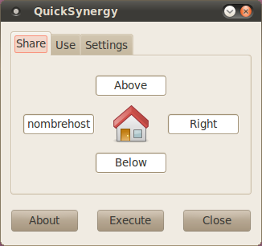
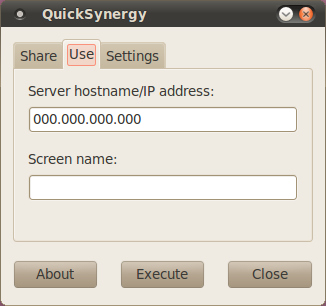

Sep 26, 2010 · 3 minute read · Comments
Computing
Cuando trabajamos no es extraño tener varias ventanas abiertas: navegador, documentación, código y cliente de Twitter (¡ejem!). Cambiar constantemente de ventana puede ser un suplicio por lo que muchos optan por utilizar dos pantallas conectadas a su equipo. Menos usual pero igualmente posible es tener que manejar dos ordenadores al mismo tiempo, por ejemplo, el equipo de trabajo y el de pruebas. En tal caso tu mesa puede convertirse en un verdadero caos con tanto teclado y ratón estorbando, la solución es Synergy. A continuación, un sencillo tutorial de instalación y configuración.
La solución es Synergy
Synergy es una aplicación open source (GPL) que nos permite compartir teclado y ratón entre dos o más equipos. Incluso es posible hacerlo entre aquellos con distinto sistema operativo instalado (GNU/Linux, Windows y Mac). QuickSynergy es una GUI para Synergy, también libre, que facilita su configuración y uso. Mi antiguo compañero de trabajo lo utilizaba y me mostró sus ventajas, ahora que me estoy acostumbrando noto una gran mejoría en comodidad y rapidez. Presten atención a los siguientes pasos para poner en marcha todo este tenderete.
Hay que distinguir entre dos conceptos:
- Servidor: equipo que comparte el teclado y el ratón con los clientes. Sólo tendremos un servidor.
- Cliente: equipo que recibe la señal de teclado y ratón del servidor. Podemos tener varios clientes conectados a un servidor.### Instalación
En el servidor vamos a instalar QuickSynergy mientras que en los clientes sólo necesitamos Synergy (aunque también podemos instalar el pack completo. En sistemas no basados en Debian será necesario descargar y compilar el código (en su forja de Google Code), pero en el resto podemos hacer:
# Instalamos Synergy + QuickSynergy
sudo apt-get install quicksynergy
# Instalamos Synergy
sudo apt-get install synergy
Configuración y uso
El primer paso es poner el servidor en marcha para que comience a enviar la señal. Para ello, abrimos QuickSynergy y nos centraremos únicamente en la pestaña “Share” (compartir). Los pasos son tremendamente sencillos:
1. Elegimos la posición del cliente con respecto al servidor (arriba, abajo, izquierda o derecha). 2. Introducimos la dirección IP o nombre de host del cliente. 3. Hacemos click en “Execute”.

Si el cliente está encendido y no tenemos fácil acceso a su teclado y ratón podemos activar Synergy a través de SSH y todos tan contentos:
ssh usuario@host "synergyc –name nombreHost ipServidor"
En cambio, si preferimos utilizar QuickSynergy para configurar el cliente será necesario acudir a la pestaña “Use”. Introducimos la IP del servidor y hacemos click sobre “Execute”.

Reputación++
Listo, ahora es posible compartir teclado y ratón entre varios equipos con lo que nuestro estatus como informático profesional habrá ganado enteros. Seremos aclamados y mereceremos el respeto y temor de todos nuestros compañeros.
Sep 25, 2010 · 3 minute read · Comments
Projects
Tiny Backup es una pequeña interfaz para algunas de las funcionalidades del comando dpkg que permite a usuarios de GNU/Linux realizar y restaurar copias de la lista de paquetes instalados en el sistema. Está desarrollado en Python utilizando PyGTK y Glade para la GUI aunque de eso ya hablé suficiente en el artículo que le dediqué hace algo más de un mes. En este pequeño escrito hablaré de la acogida de la primera versión y de los arreglos que incorpora la segunda.
La recepción de Tiny Backup 0.1
Para mi sorpresa, Tiny Backup 0.1 tuvo una buena acogida teniendo en cuenta las pequeñas dimensiones del proyecto. No tanto por el número de descargas sino por el feedback de los usuarios. Incluso recibí una invitación para hablar sobre la aplicación en el blog Muy Linux (la cual acepté de buen gusto). Generalmente las impresiones fueron buenas aunque se reportó algún que otro problema. El más sangrante era que, al ejecutar Tiny Backup desde otro directorio que no fuese el del módulo principal (desde un acceso directo, por ejemplo) no se encontraban los ficheros referenciados por rutas relativas. Un fallo bastante grave del que debí haberme percatado en su momento.
Bug encontrado y solucionado para Tiny Backup 0.2
La solución pasaba por obtener la ruta absoluta del módulo en ejecución y, a partir de la misma, construir el camino hasta el fichero deseado. El no ser muy ducho en Python y no haberle dedicado el suficiente tiempo a la aplicación ha hecho que la solución se retrase más de lo debido. Gracias al lector Cristian Arbazua y su afán colaborativo el bug ha sido cerrado. Sin duda, un aporte que recuerda el valor del Software Libre y anima a continuar. A continuación un pequeño ejemplo de la medida tomada:
# Vamos a construir la interfaz del formulario principal
builder = gtk.Builder()
# ANTES: Tomamos la ruta relativa donde se encuentra el Glade
path = 'glade/TinyBackup.glade'
# AHORA: Tomamos la ruta absoluta donde se encuentra el Glade
path = os.path.dirname(__file__) + os.sep + 'glade/TinyBackup.glade'
# Cargamos el fichero
builder.add_from_file(path)
Cuando vi su aporte acudí velozmente a modificar el código, probarlo y subir una nueva versión a la forja. Desde estos momentos podéis descargar Tiny Backup 0.2.
Futuras versiones
El tiempo es un bien del que ando bastante escaso últimamente y, en estos momentos, mi tiempo de desarrollo lo acapara IberOgre y Sion Tower. No obstante, se me ocurren un par de ideas para Tiny Backup 0.3:
- Internacionalización: empecé a desarrollar Tiny Backup en inglés pero me gustaría que estuviese disponible en algunos idiomas más: español, francés, alemán, etc. Tengo entendido que con Glade es sencillo incorporar internacionalización y sería interesante aprender cómo.
- Barra de progreso: los usuarios necesitan feedback constante por parte del software que utilizan. Si encargan una tarea pesada y no aparece una barra de progreso creerán que la aplicación se ha colgado. Si queremos restaurar una extensa lista de paquetes el proceso puede llevar bastante tiempo así que esta característica tiene bastante prioridad.
Desconozco cuando podré dedicarle el tiempo suficiente para incorporar estas mejoras. En cualquier caso le vuelvo a agradecer a Cristian Arbazua su inestimable colaboración en este pequeño proyecto. ¡El feedback siempre es bienvenido!
Sep 20, 2010 · 2 minute read · Comments
Games development
El V Concurso Universitario de Software Libre abre sus puertas y como no podía ser menos IberOgre y Sion Tower ya están inscritos en él. A pesar de que Sion Tower sea un videojuego, el proyecto se encuentra bajo la categoría “Educación” por estar dirigido al aprendizaje de desarrollo de videojuegos en 3D con Ogre. En la fecha de redacción de este artículo no hay muchos proyectos registrado aunque seguro que la lista crecerá hasta alcanzar un buen número. Sigue leyendo si te interesa conocer las novedades del proyecto y la nueva forja.
El año pasado participé en el IV CUSL con Air Force Pilot, un pequeño juego de aviones en 2D con vista cenital. Lo hice sin ningún tipo de ambición, simplemente a modo de experimento, para aprender e imponerme cierta continuidad en su desarrollo. La experiencia que me llevé fue absolutamente positiva ya que conocí decenas de proyectos interesantes y viví el buen ambiente de la lista de correo. ¡Lo más inesperado fue quedar finalista en la fase local de Cádiz! Estoy convencido de que este año también disfrutaré del concurso, esta vez con mi PFC, lo que me permitirá dedicarle más tiempo.
Hasta el momento para el control de versiones he utilizado Git, no obstante, el CUSL obliga a utilizar la forja en RedIris (la cual cuenta únicamente con SVN). Sé que es posible mantener un SVN a partir de una rama de un repositorio Git utilizando la herramienta git SVN aunque tengo entendido que puede dar problemas. Bajo la premisa “keep it simple” me decanto por el SVN de RedIris, más adelante trataré de solucionar este problema.
Para seguir el desarrollo de IberOgre y Sion Tower pueden ser útiles los siguientes enlaces:
Espero que el proyecto crezca con ayuda del concurso y les deseo muchísima suerte al resto de participantes.
Sep 18, 2010 · 3 minute read · Comments
Hobbies
Tras haber terminado la miniserie de Los Pilares de la Tierra mi compañero Poorpooland me comentó que había oído hablar bien de Luther, una serie inglesa, de la BBC. El hecho de que contará solamente con 6 capítulos en su primera temporada prometía un visionado liviano y rápido así que la devoré en apenas unos cuantos días. Les adelanto que me ha gustado bastante a pesar de la división de opiniones que produjo en el momento de su emisión, a continuación mi humilde valoración.
El detective inspector jefe (DCI) John Luther tiene una mente privilegiada, es capaz de calar a los sospechosos antes de disponer todas las pruebas. Esta perspicacia le llevará a actuar sobre la línea que separa el protocolo de lo ilegal. A grandes rasgos podríamos asegurar que es una especie de House metido a detective aunque también podríamos compararlo con Sherlock Holmes o Colombo. Tanto su carácter temperamental como sus problemas conyugales o traumas pasados interferirán más de una vez en su trabajo. La fuerte personalidad de su protagonista y el fuerte componente psicológico son los rasgos más reseñables de la serie.
De las primeras cosas que me sorprendieron de la serie fue la estructura de sus episodios, normalmente o se sigue una trama continua o son piezas autoconcluyentes. En este caso hay un poco de todo, puede que en un episodio atrapen al criminal aunque también es posible que dicha línea argumental continúe posteriormente. Esto confunde al espectador en el mejor de los sentidos, en otras producciones como House sabes que un problema acabará (bien o mal), pero en Luther existe una mayor incertidumbre, todo un acierto.
Se le ha achacado mucho lo arquetípico de su protagonista, un tipo serio, introvertido, desvivido por su trabajo, malhumorado, perspicaz, arriesgado, etc. Parece que lo han sacado de un molde, llevan toda la razón. No obstante, Idris Elba, el actor que lo interpreta hace un estupendo trabajo, dota de gran fuerza al personaje y compensa las críticas. Supongo que recordarán a Idris Elba por magnífico trabajo que hizo encarnando a Russel Stringer Bell en The Wire.
El ritmo que consigue Luther es sorprendente: la intensidad, el peligro y los giros de guión son constantes. Se decanta por el arriesgado enfoque de mostrar quien es el enemigo y dejar el misterio en cómo lo atraparán (o no). Para ello las trampas y el juego psicológico están a la orden del día. Es evidente que si te gustan las tramas policíacas debes darle una oportunidad sobre todo por su corta duración.
Sopesando sus fallos y virtudes, Luther sale bastante bien parada, por tanto les recomiendo un visionado máxime si no disponen de excedentes de tiempo para una producción de mayor duración. Por supuesto, siempre en versión original ya que disfrutarán del particular acento inglés que siempre me llama la atención, “fellas”.
Sep 12, 2010 · 2 minute read · Comments
Hobbies
Hace bastante tiempo tuve la ocasión de leer el best-seller por antonomasia de Ken Follet “Los Pilares de la Tierra”. Un libro extenso que, lejos de ser una obra maestra, te conduce en un fantástico viaje por la Inglaterra del S.XII y los inicios de la arquitectura gótica en Europa utilizando el desarrollo de sus personajes como medio de transporte. Desconocía que se estaba rodando una miniserie basada en la novela y me he lanzado a verla durante los últimos días, a continuación unas breves impresiones.
No me gustaría entretenerme en exponer mi opinión de la obra completa, sino de la miniserie como adaptación del original. Por supuesto, el texto está libre de spoilers. Ocho episodios de una hora aproximadamente que se antojan insuficientes componen el resumen del mastodóntico libro. El texto de Follet se recrea en los espléndidos avances arquitectónicos mostrándonos su belleza y majestuosidad. Por otro lado, esta adaptación toma la guerra de sucesión inglesa así como el entramado de odio, venganza y amor entre los personajes como eje principal. Un cambio de prioridades que deja cojo al conjunto aunque permite que conectemos más con los personajes.
Si obviamos el cambio de enfoque encontraremos una versión televisiva más que digna. Esta historia llena de detalles demuestra hasta dónde puede llegar la ambición humana, ya saben, aquello de “el fin justifica los medios”. Monjes corruptos, nobles crueles pero supersticiosos, una corona en juego, el resurgir de las cenizas de Kingsbridge y la construcción de una catedral gótica nos mantendrán suficientemente entretenidos.
Los sibaritas de la pequeña pantalla deben estar avisados, no es una producción sobresaliente aunque merece una oportunidad, máxime si se sabe disfrutar de una historia de estas características. Si bien las licencias que se toman los productores de la serie son abundantes las considero comprensibles al tratarse de medios notablemente distintos. Sé que las puntuaciones en webs especializadas de poco sirven, pero para que se hagan una idea les diré que tiene un 8.8 en IMDB. En España se estrena el martes, emitiéndose los episodios en packs dobles. En cualquier caso, siempre recomiendo el visionado en versión original (curioso el marcado acento inglés).